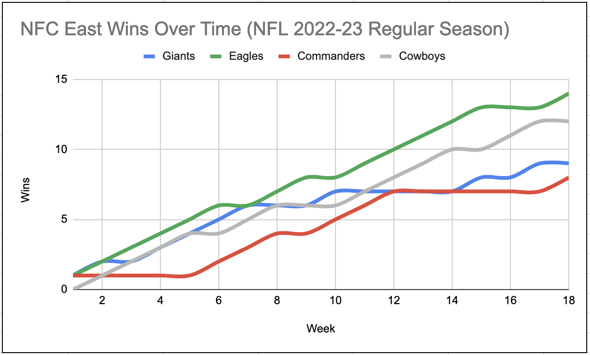

hw-03: Interactive Webpage, and Marks & Channels

Marks
- Areas - Map of Country and Votes Needed To Win Bar
- Points - Nebraska and Maine Electoral Votes
Channels
- Color - Clinton is Blue, Trump is Red
- Represents attribute of the categorical type on color hue
- This is a good mapping, because the differing colors clearly help the view know which party leader would have been elected by women in each state
- Position (Horizontal) - Electoral Votes Needed To Win
- Represents attribute of ordered, quantitative, diverging for position on a common scale
- This is a good mapping, because it clearly shows which candidate receives the majority of the votes and if they won or not
Colormaps
- Categorical - By Political Party
- Represents attribute of the type, Categorical
- This is a good mapping, because it helps show which states are Democrat majority(blue), Republican majority (red), and in-between (red and blue)
- Divergent - Majority Democrat, In-Between, Majority Republican
- Represents attribute of the type, Ordered and Qualitative
- This is a good mapping, because it helps show the result of the vote count by which color it is and you clearly see who won the state.

Marks
- Points - Type of Way a Baseball Can Be Thrown (Velocity and Angle)
- Area - What Kind of Hit It Is (Pop-up, Home Run, Fly Ball, etc.)
Channels
- Position (Both) - The Angle and Velocity of the Ball
- Represents attribute of the type Ordered and tilt/angle(for position on graph)
- This is a good mapping, because it clearly depicts how the ball was hit and how it differes from the other points
- Color - Scoring Value
- Represents attribute of the qualitative type on color saturation
- This is a good mapping, because it is easy to tell how well a ball hit in that way will do in terms of scoring value
- Position (Horizontal) - Scoring Value Bar
- Represents attribute of type ordered, quantitative, diverging for position on a common scale
- This is a good mapping, because you can see the scale of color from being below average scoring value, average, or above
Colormap
- Divergent - Below Average, Average, or Above Average Scoring Value
- Represents attribute of type, Ordered and Qualitative
- This is a good mapping, because you can clearly see if it is below average for scoring value, in the midde or average, or above the average for scoring

Marks
- Lines - The Wins Over Weeks for Each Team
Channels
- Position (Both) - The Amount of Wins for Each Week
- Represents attribute of the type Ordered and tilt/angle(for increase in wins)
- This is a good mapping, because it clearing shows the growth in team wins for each team over the weeks of the season
- Color - Represent the Different Teams
- Represents attribute of the categorical type on color hue
- This is a good mapping, because you can clearly tell which line is for which team
Colormap
- Categorical - By Football Team
- Represents attribute of the type, Categorical
- This is a good mapping, because you can see which team is which color on the graph
Acknowledgements